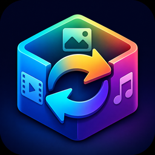

PORTABLE FILE TOOL
ConvertBox
動画・音声・画像を、わかりやすく変換するためのデスクトップアプリ
1
カテゴリを選択
変換したいファイルの種類を選んでください。
2
ファイルを選択
最大100件まで選択できます。ファイルのドロップにも対応しています。
または、ここへファイルをドラッグ＆ドロップ
- ファイル名
- 未選択
- 拡張子
- -
- 推定カテゴリ
- -
動画解析結果
長さ-
解像度-
映像形式-
音声形式-
音声解析結果
長さ-
音声形式-
サンプルレート-
チャンネル-
画像解析結果
サイズ-
画像形式-
色チャンネル-
ページ数-
3
変換先を選択
出力したいファイル形式を指定してください。
ファイルサイズは内容によって変わります。PNG・SVG・WAVは画質・音質を劣化させない形式です。
4
保存先と変換キュー
複数件の変換では、保存先フォルダを一度だけ指定します。
未指定：1件の変換後に保存先を選びます
同名ファイルがある場合は連番を付けます。元ファイルと既存の保存ファイルは上書きしません。
変換中0%
ファイルを選択して、変換先形式を指定してください。